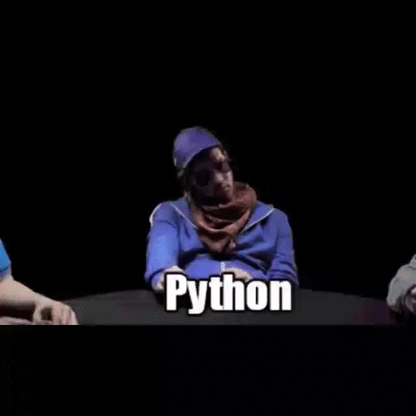
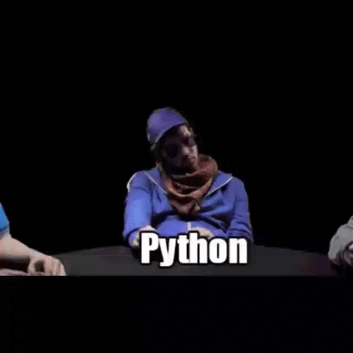

Программист- это специалист, создающий исходный код для программы. Такой программой может быть операционная система компьютера, видеоигра, web или мобильное приложение и даже алгоритм работы микроволновки.
Программный код пишется на специальном языке программирования. Он состоит из обычных слов и некоторых специальных символов. Сегодня насчитывается несколько сотен языков программирования, но самые распространенные из них – Java, Python, PHP, C#, JavaScript, C, С++, Objective-C, Swift.
Какой язык программирования выбрать, программист решает сам в зависимости от конкретной задачи (сделать игру, приложение для web или программу для сервера) и собственных знаний. Квалифицированный программист уверенно использует 2-4 языка.
 
